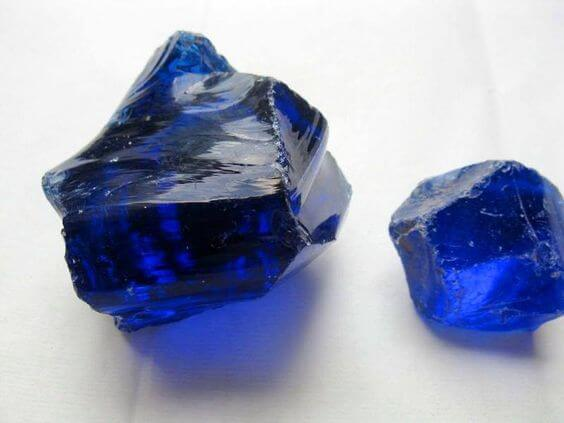

Obsidian Blue
Information
The Blue Obsidian stone is created by volcanic lava with high silica content and trapped gas bubbles that cool quickly before crystals form. So it cannot be considered as a crystal. Crystals are usually other forms of volcanic matter.
Blue Obsidian has a unique energy that radiates cool-headed clarity, a sense of calmness, and the splendor of grounded and courageous communication. Blue Obsidian is all about neutralizing and balancing which is why it's so good at encouraging communication and grounding. This also works when it comes to the body as it invites your whole system to chill out, strengthen, and stay solid in ticking over. One of the major strengths of Blue Obsidian comes in its ability to help with communication skills.
Health Benefits
You can find here some Healing Properties.
Outfits